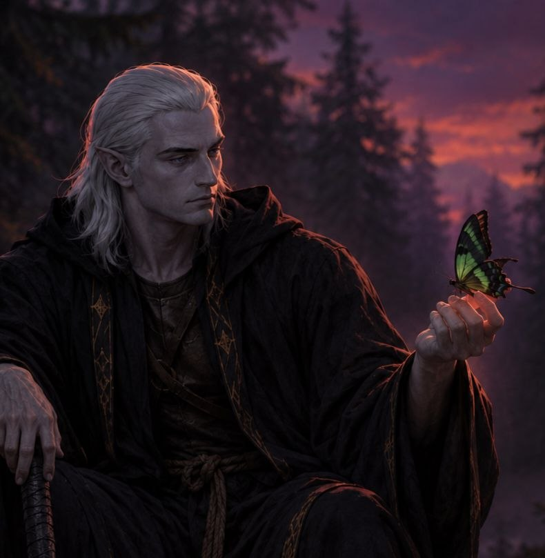
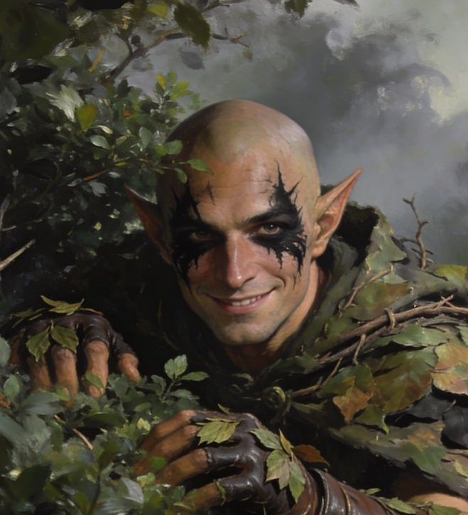
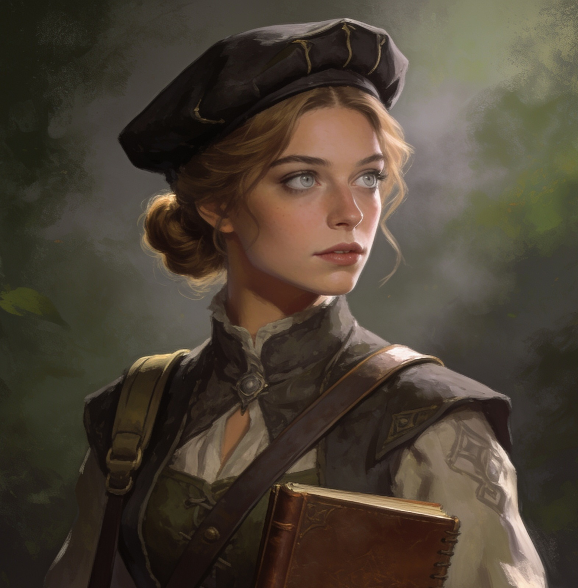
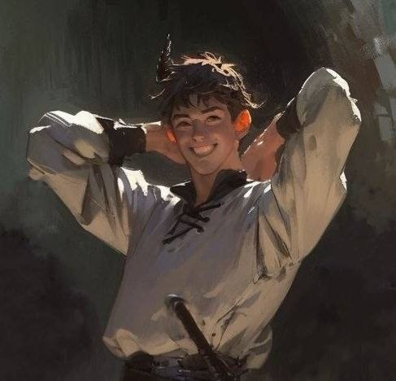

Или путишествия одноходов
Культ дракона снова приступил к открытым действиям. Очевидно, сектанты ищут что-то ценное. Они рыщут по берегу, верша насилие и беспокоя защитников района.
Побережье Мечей находится в большой опасности, и все храбрые герои призваны на помощь.
Класс: Жрец | Раса: Астральный эльф | Уровень: 4
Знание свет, не знания чернь.

Класс: Друид | Раса: Лесной эльф | Уровень: 4
Хранитель древних лесов, говорящий с деревьями и зверями. Его магия рождается из самой земли.

Класс: Волшебник | Раса: Человек | Уровень: 4
Учёная магии, постигающая тайны арканных искусств. Каждая книга — ключ к новой силе.

Класс: Плут | Раса: Полу Тифлинг | Уровень: 4
Воин воришка, хулиган и плутишка, Астер Даранте к вашем услугам!

Группа встретилась в таверне когда на город Гринест напали культисты, отбив нападения герои укрылись в крепости, чтобы отразить атаку синего дракона.
Важная находка: 4 мантии культа Тиамат.